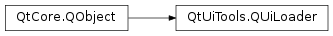

QUiLoader¶
Synopsis¶
Functions¶
- def
addPluginPath(path) - def
availableLayouts() - def
availableWidgets() - def
clearPluginPaths() - def
errorString() - def
isLanguageChangeEnabled() - def
isTranslationEnabled() - def
load(arg__1[, parentWidget=None]) - def
load(device[, parentWidget=None]) - def
pluginPaths() - def
registerCustomWidget(customWidgetType) - def
setLanguageChangeEnabled(enabled) - def
setTranslationEnabled(enabled) - def
setWorkingDirectory(dir) - def
workingDirectory()
Virtual functions¶
- def
createAction([parent=nullptr[, name=”“]]) - def
createActionGroup([parent=nullptr[, name=”“]]) - def
createLayout(className[, parent=nullptr[, name=”“]]) - def
createWidget(className[, parent=nullptr[, name=”“]])
Detailed Description¶
The
PySide2.QtUiTools.QUiLoaderclass enables standalone applications to dynamically create user interfaces at run-time using the information stored in UI files or specified in plugin paths.In addition, you can customize or create your own user interface by deriving your own loader class.
If you have a custom component or an application that embeds Qt Designer , you can also use the QFormBuilder class provided by the QtDesigner module to create user interfaces from UI files.
The
PySide2.QtUiTools.QUiLoaderclass provides a collection of functions allowing you to create widgets based on the information stored in UI files (created with Qt Designer ) or available in the specified plugin paths. The specified plugin paths can be retrieved using thePySide2.QtUiTools.QUiLoader.pluginPaths()function. Similarly, the contents of a UI file can be retrieved using thePySide2.QtUiTools.QUiLoader.load()function. For example:class MyWidget(QWidget): def __init__(self, parent): super(QWidget, self).__init__(parent) loader = QUiLoader() file = QFile(":/forms/myform.ui") file.open(QFile.ReadOnly) myWidget = loader.load(file, self) file.close() layout = QVBoxLayout() layout.addWidget(myWidget) self.setLayout(layout)By including the user interface in the form’s resources (
myform.qrc), we ensure that it will be present at run-time:<Code snippet "/tmp/qt-doc-test-511/_qt5/qtbase/quiloader/mywidget.qrc" not found>The
PySide2.QtUiTools.QUiLoader.availableWidgets()function returns aPySide2.QtCore.QStringListwith the class names of the widgets available in the specified plugin paths. To create these widgets, simply use thePySide2.QtUiTools.QUiLoader.createWidget()function. For example:def loadCustomWidget(parent): loader = QUiLoader() availableWidgets = loader.availableWidgets() if availableWidgets.contains("AnalogClock"): myWidget = loader.createWidget("AnalogClock", parent) return myWidgetTo make a custom widget available to the loader, you can use the
PySide2.QtUiTools.QUiLoader.addPluginPath()function; to remove all available widgets, you can call thePySide2.QtUiTools.QUiLoader.clearPluginPaths()function.The
PySide2.QtUiTools.QUiLoader.createAction(),PySide2.QtUiTools.QUiLoader.createActionGroup(),PySide2.QtUiTools.QUiLoader.createLayout(), andPySide2.QtUiTools.QUiLoader.createWidget()functions are used internally by thePySide2.QtUiTools.QUiLoaderclass whenever it has to create an action, action group, layout, or widget respectively. For that reason, you can subclass thePySide2.QtUiTools.QUiLoaderclass and reimplement these functions to intervene the process of constructing a user interface. For example, you might want to have a list of the actions created when loading a form or creating a custom widget.For a complete example using the
PySide2.QtUiTools.QUiLoaderclass, see the Calculator Builder Example.See also
Qt UI Tools
QFormBuilder
-
class
PySide2.QtUiTools.QUiLoader([parent=nullptr])¶ Parameters: parent – PySide2.QtCore.QObjectCreates a form loader with the given
parent.
-
PySide2.QtUiTools.QUiLoader.addPluginPath(path)¶ Parameters: path – unicode Adds the given
pathto the list of paths in which the loader will search when locating plugins.
-
PySide2.QtUiTools.QUiLoader.availableLayouts()¶ Return type: list of strings Returns a list naming all available layouts that can be built using the
PySide2.QtUiTools.QUiLoader.createLayout()function
-
PySide2.QtUiTools.QUiLoader.availableWidgets()¶ Return type: list of strings Returns a list naming all available widgets that can be built using the
PySide2.QtUiTools.QUiLoader.createWidget()function, i.e all the widgets specified within the given plugin paths.
-
PySide2.QtUiTools.QUiLoader.clearPluginPaths()¶ Clears the list of paths in which the loader will search when locating plugins.
-
PySide2.QtUiTools.QUiLoader.createAction([parent=nullptr[, name=""]])¶ Parameters: - parent –
PySide2.QtCore.QObject - name – unicode
Return type: Creates a new action with the given
parentandname.The function is also used internally by the
PySide2.QtUiTools.QUiLoaderclass whenever it creates a widget. Hence, you can subclassPySide2.QtUiTools.QUiLoaderand reimplement this function to intervene process of constructing a user interface or widget. However, in your implementation, ensure that you callPySide2.QtUiTools.QUiLoader‘s version first.- parent –
-
PySide2.QtUiTools.QUiLoader.createActionGroup([parent=nullptr[, name=""]])¶ Parameters: - parent –
PySide2.QtCore.QObject - name – unicode
Return type: Creates a new action group with the given
parentandname.The function is also used internally by the
PySide2.QtUiTools.QUiLoaderclass whenever it creates a widget. Hence, you can subclassPySide2.QtUiTools.QUiLoaderand reimplement this function to intervene process of constructing a user interface or widget. However, in your implementation, ensure that you callPySide2.QtUiTools.QUiLoader‘s version first.- parent –
-
PySide2.QtUiTools.QUiLoader.createLayout(className[, parent=nullptr[, name=""]])¶ Parameters: - className – unicode
- parent –
PySide2.QtCore.QObject - name – unicode
Return type: Creates a new layout with the given
parentandnameusing the class specified byclassName.The function is also used internally by the
PySide2.QtUiTools.QUiLoaderclass whenever it creates a widget. Hence, you can subclassPySide2.QtUiTools.QUiLoaderand reimplement this function to intervene process of constructing a user interface or widget. However, in your implementation, ensure that you callPySide2.QtUiTools.QUiLoader‘s version first.
-
PySide2.QtUiTools.QUiLoader.createWidget(className[, parent=nullptr[, name=""]])¶ Parameters: - className – unicode
- parent –
PySide2.QtWidgets.QWidget - name – unicode
Return type: Creates a new widget with the given
parentandnameusing the class specified byclassName. You can use this function to create any of the widgets returned by thePySide2.QtUiTools.QUiLoader.availableWidgets()function.The function is also used internally by the
PySide2.QtUiTools.QUiLoaderclass whenever it creates a widget. Hence, you can subclassPySide2.QtUiTools.QUiLoaderand reimplement this function to intervene process of constructing a user interface or widget. However, in your implementation, ensure that you callPySide2.QtUiTools.QUiLoader‘s version first.
-
PySide2.QtUiTools.QUiLoader.errorString()¶ Return type: unicode Returns a human-readable description of the last error occurred in
PySide2.QtUiTools.QUiLoader.load().See also
-
PySide2.QtUiTools.QUiLoader.isLanguageChangeEnabled()¶ Return type: PySide2.QtCore.boolReturns true if dynamic retranslation on language change is enabled; returns false otherwise.
-
PySide2.QtUiTools.QUiLoader.isTranslationEnabled()¶ Return type: PySide2.QtCore.boolReturns true if translation is enabled; returns false otherwise.
-
PySide2.QtUiTools.QUiLoader.load(arg__1[, parentWidget=None])¶ Parameters: - arg__1 – unicode
- parentWidget –
PySide2.QtWidgets.QWidget
Return type:
-
PySide2.QtUiTools.QUiLoader.load(device[, parentWidget=None]) Parameters: - device –
PySide2.QtCore.QIODevice - parentWidget –
PySide2.QtWidgets.QWidget
Return type: Loads a form from the given
deviceand creates a new widget with the givenparentWidgetto hold its contents.- device –
-
PySide2.QtUiTools.QUiLoader.pluginPaths()¶ Return type: list of strings Returns a list naming the paths in which the loader will search when locating custom widget plugins.
-
PySide2.QtUiTools.QUiLoader.registerCustomWidget(customWidgetType)¶ Parameters: customWidgetType – PyObject- Registers a Python created custom widget to QUiLoader, so it can be recognized when
loading a .ui file. The custom widget type is passed via the
customWidgetTypeargument. This is needed when you want to override a virtual method of some widget in the interface, since duck punching will not work with widgets created by QUiLoader based on the contents of the .ui file.(Remember that duck punching virtual methods is an invitation for your own demise!)
Let’s see an obvious example. If you want to create a new widget it’s probable you’ll end up overriding
QWidget’spaintEvent()method.class Circle(QWidget): def paintEvent(self, event): painter = QPainter(self) painter.setPen(self.pen) painter.setBrush(QBrush(self.color)) painter.drawEllipse(event.rect().center(), 20, 20) # ... loader = QUiLoader() loader.registerCustomWidget(Circle) circle = loader.load('circle.ui') circle.show() # ...
-
PySide2.QtUiTools.QUiLoader.setLanguageChangeEnabled(enabled)¶ Parameters: enabled – PySide2.QtCore.boolIf
enabledis true, user interfaces loaded by this loader will automatically retranslate themselves upon receiving a language change event. Otherwise, the user interfaces will not be retranslated.
-
PySide2.QtUiTools.QUiLoader.setTranslationEnabled(enabled)¶ Parameters: enabled – PySide2.QtCore.boolIf
enabledis true, user interfaces loaded by this loader will be translated. Otherwise, the user interfaces will not be translated.Note
This is orthogonal to languageChangeEnabled.
-
PySide2.QtUiTools.QUiLoader.setWorkingDirectory(dir)¶ Parameters: dir – PySide2.QtCore.QDirSets the working directory of the loader to
dir. The loader will look for other resources, such as icons and resource files, in paths relative to this directory.
-
PySide2.QtUiTools.QUiLoader.workingDirectory()¶ Return type: PySide2.QtCore.QDirReturns the working directory of the loader.
© 2018 The Qt Company Ltd. Documentation contributions included herein are the copyrights of their respective owners. The documentation provided herein is licensed under the terms of the GNU Free Documentation License version 1.3 as published by the Free Software Foundation. Qt and respective logos are trademarks of The Qt Company Ltd. in Finland and/or other countries worldwide. All other trademarks are property of their respective owners.